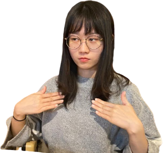
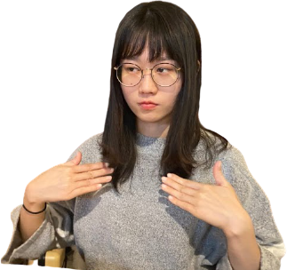

主要負責系統的建置、介面及模型訓練，次要參與簡報、海報等設計。
想當初去年十二月還在討論專題教授，今年四月才剛決定題目，五月遇上疫情爆發，每天只能在租屋處與鏡子、組員（線上）相見，內心想著這樣的日子同樣的方式還要多久♫。隨著時間的流逝，經歷指導教授建議勿心猿意馬、碩士學長姐邊咆嘯邊陪伴我們到早上、與其他同指導教授的專題生互相切磋練習、借鑒，在過程中增進了自身能力、也留下了許多深刻的回憶，不過最開心的莫過於付出的努力有所回報，感謝組員、教授、學長姐以及所有幫助過我們的人
我在團隊內主要負責製作簡報及美工，而創意發想和後續修改等等，都是和組員一起完成的。
製作專題將近一年的時間，從一開始的題目發想到現在的成果展示，經歷過非常多的風風雨雨，但有組員們的相互合作和支持下，我們一起完成了iMirror，也在幾項競賽中獲得佳績，其中我覺得最重要的是，吸收了很多競賽經驗和學習到如何團隊溝通，謝謝組員們這幾個月來的配合，也謝謝專題老師和學長姐。
我在團隊裡主要負責協助專案報告、QA回答與影片腳本初稿構思，並和其他組員合力完成其他工作。
在專案開發的這一年間，和組員們一起努力從0到有的把專案一步一步完成，讓我收穫很大。儘管一開始我和其他三位組員的基礎關係不是最好，但他們沒有因此對我另眼相看，反而在我很低潮或是很混的時候給予我鼓勵，並適當的警惕我，且老師和學長姐孜孜不倦的引導我們，解答我們不懂的地方，透過許多人給予的幫助，我們才成就了iMirror面面俱到並得到這些獎項，相信在未來，這段經歷將會是我人生中很重要的一部份。
主要負責系統的建置、介面及模型訓練，次要參與簡報、海報等設計。
想當初去年十二月還在討論專題教授，今年四月才剛決定題目，五月遇上疫情爆發，每天只能在租屋處與鏡子、組員（線上）相見，內心想著這樣的日子同樣的方式還要多久♫。隨著時間的流逝，經歷指導教授建議勿心猿意馬、碩士學長姐邊咆嘯邊陪伴我們到早上、與其他同指導教授的專題生互相切磋練習、借鑒，在過程中增進了自身能力、也留下了許多深刻的回憶，不過最開心的莫過於付出的努力有所回報，感謝組員、教授、學長姐以及所有幫助過我們的人
我在團隊內主要負責書面編輯、影片剪輯與美工部分，並和組員們一起合作完成其他事項。
和組員們在這一年的期間，從訂定題目、確定技術到開發系統，中間經歷不少波折，卻也在過程中加深自己對專業領域的瞭解，更學習到與夥伴合作溝通的技巧，彼此之間漸漸培養出默契，最終在各項比賽獲得不錯的成績，感謝組員們與自己的努力，感謝我們沒有放棄。